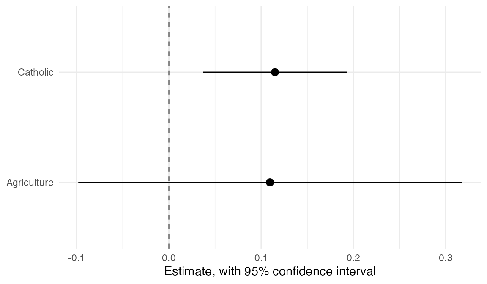
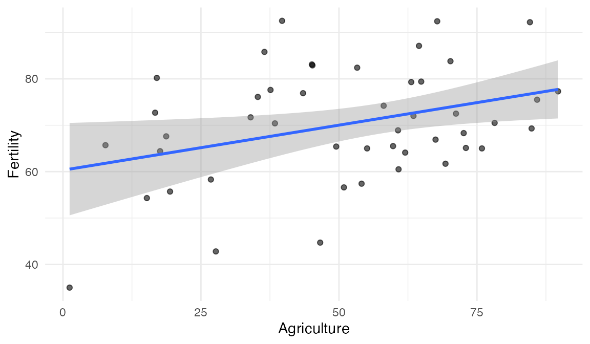
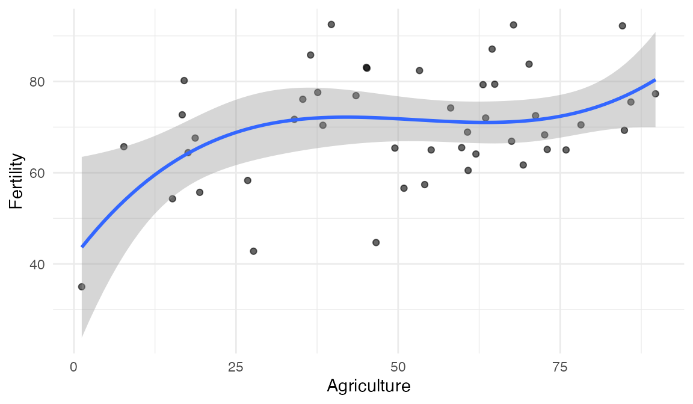
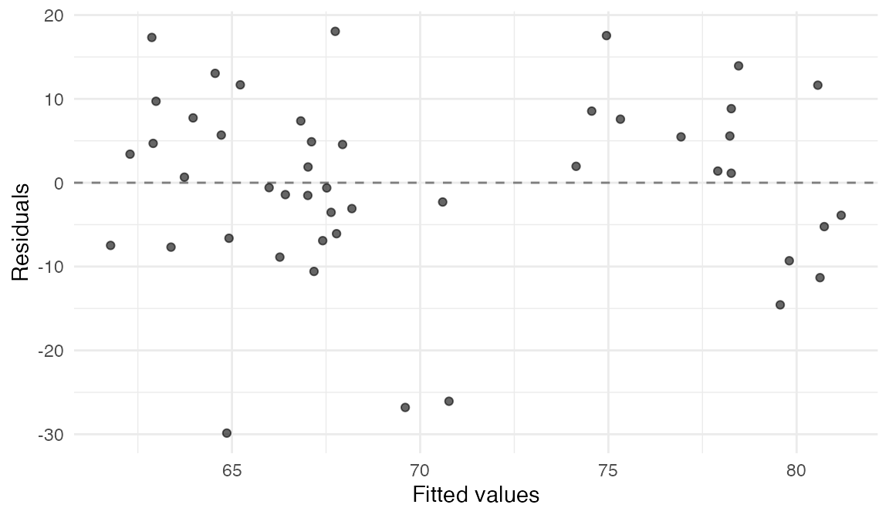

estimatr in the tidyverse
Source:vignettes/estimatr-in-the-tidyverse.Rmd
estimatr-in-the-tidyverse.RmdEverything estimatr returns is a list, and tidy() turns
the part you want into a tibble. From there the tidyverse applies
unchanged. What follows uses lm_robust(), but
tidy() works the same way on lm_lin(),
iv_robust(), lh_robust(),
difference_in_means() and horvitz_thompson()
fits.
The examples use the Swiss fertility data that ships with R: 47 French-speaking provinces in 1888, with a standardized fertility measure and, as percentages, the share of men in agriculture, the share of Catholics, and the share educated beyond primary school.
head(swiss[, c("Fertility", "Agriculture", "Catholic", "Education")], 3)
#> Fertility Agriculture Catholic Education
#> Courtelary 80.2 17.0 9.96 12
#> Delemont 83.1 45.1 84.84 9
#> Franches-Mnt 92.5 39.7 93.40 5Getting tidy
fit <- lm_robust(Fertility ~ Agriculture + Catholic, data = swiss)
tidy(fit)
#> # A tibble: 3 × 9
#> term estimate std.error statistic p.value conf.low conf.high df outcome
#> <chr> <dbl> <dbl> <dbl> <dbl> <dbl> <dbl> <dbl> <chr>
#> 1 (Intercept) 59.9 5.47 10.9 3.93e-14 48.8 70.9 44 Fertility
#> 2 Agriculture 0.110 0.103 1.06 2.94e- 1 -0.0982 0.317 44 Fertility
#> 3 Catholic 0.115 0.0385 2.98 4.65e- 3 0.0373 0.193 44 FertilityOne row per coefficient, and an outcome column, which
matters because lm_robust() accepts a matrix of outcomes
and fits them all at once.
glance() gives the one-row model summary instead.
glance(fit)
#> # A tibble: 1 × 7
#> r.squared adj.r.squared statistic p.value df.residual nobs se_type
#> <dbl> <dbl> <dbl> <dbl> <int> <int> <chr>
#> 1 0.248 0.214 9.89 0.000284 44 47 HC2augment() returns the data the model was fit on, one row
per observation, with the fitted values and residuals added as
.fitted and .resid. With newdata,
it predicts on new rows instead.
augment(fit)
#> # A tibble: 47 × 5
#> Fertility Agriculture Catholic .fitted .resid
#> <dbl> <dbl> <dbl> <dbl> <dbl>
#> 1 80.2 17 9.96 62.9 17.3
#> 2 83.1 45.1 84.8 74.6 8.54
#> 3 92.5 39.7 93.4 74.9 17.6
#> 4 85.8 36.5 33.8 67.7 18.1
#> 5 76.9 43.5 5.16 65.2 11.7
#> 6 76.1 35.3 90.6 74.1 1.96
#> 7 83.8 70.2 92.8 78.2 5.57
#> 8 92.4 67.8 97.2 78.5 13.9
#> 9 82.4 53.3 97.7 76.9 5.47
#> 10 82.9 45.2 91.4 75.3 7.58
#> # ℹ 37 more rows
augment(fit, newdata = data.frame(Agriculture = c(20, 60), Catholic = c(10, 90)))
#> # A tibble: 2 × 3
#> Agriculture Catholic .fitted
#> <dbl> <dbl> <dbl>
#> 1 20 10 63.2
#> 2 60 90 76.8dplyr
library(dplyr)
fit |>
tidy() |>
filter(term != "(Intercept)") |>
mutate(significant = p.value <= 0.05) |>
select(term, estimate, std.error, significant)
#> # A tibble: 2 × 4
#> term estimate std.error significant
#> <chr> <dbl> <dbl> <lgl>
#> 1 Agriculture 0.110 0.103 FALSE
#> 2 Catholic 0.115 0.0385 TRUEggplot2
A coefficient plot is the tidy tibble with
geom_pointrange() on it.
library(ggplot2)
gg_df <- fit |>
tidy() |>
filter(term != "(Intercept)")
ggplot(gg_df, aes(x = estimate, y = term)) +
geom_vline(xintercept = 0, linetype = 2, colour = "grey50") +
geom_pointrange(aes(xmin = conf.low, xmax = conf.high)) +
labs(x = "Estimate, with 95% confidence interval", y = NULL) +
theme_minimal()
geom_smooth() takes lm_robust as a method,
so the ribbon reflects the robust variance rather than the classical
one.
ggplot(swiss, aes(x = Agriculture, y = Fertility)) +
geom_point(alpha = 0.6) +
geom_smooth(method = "lm_robust", formula = y ~ x) +
theme_minimal()
The formula can be anything lm_robust() accepts,
polynomials included.
ggplot(swiss, aes(x = Agriculture, y = Fertility)) +
geom_point(alpha = 0.6) +
geom_smooth(method = "lm_robust", formula = y ~ poly(x, 3, raw = TRUE)) +
theme_minimal()
A residual plot starts from augment().
gg_df <- augment(fit)
ggplot(gg_df, aes(x = .fitted, y = .resid)) +
geom_hline(yintercept = 0, linetype = 2, colour = "grey50") +
geom_point(alpha = 0.6) +
labs(x = "Fitted values", y = "Residuals") +
theme_minimal()
Many models with purrr
Fitting the same model on subsets, then stacking the results:
library(purrr)
swiss |>
mutate(educated = Education > 8) |>
split(~ educated) |>
map(\(d) lm_robust(Fertility ~ Catholic, data = d)) |>
map(tidy) |>
list_rbind(names_to = "educated") |>
filter(term == "Catholic")
#> # A tibble: 2 × 10
#> educated term estimate std.error statistic p.value conf.low conf.high df outcome
#> <chr> <chr> <dbl> <dbl> <dbl> <dbl> <dbl> <dbl> <dbl> <chr>
#> 1 FALSE Catholic 0.137 0.0326 4.20 0.000339 0.0697 0.205 23 Fertil…
#> 2 TRUE Catholic 0.0590 0.0827 0.713 0.484 -0.114 0.232 20 Fertil…For grouped fits, dplyr’s reframe() does the same
without leaving the data frame. pick(everything()) hands
each group’s rows to lm_robust().
swiss |>
as_tibble() |>
mutate(educated = Education > 8) |>
reframe(tidy(lm_robust(Fertility ~ Catholic, data = pick(everything()))), .by = educated) |>
filter(term == "Catholic")
#> # A tibble: 2 × 10
#> educated term estimate std.error statistic p.value conf.low conf.high df outcome
#> <lgl> <chr> <dbl> <dbl> <dbl> <dbl> <dbl> <dbl> <dbl> <chr>
#> 1 TRUE Catholic 0.0590 0.0827 0.713 0.484 -0.114 0.232 20 Fertil…
#> 2 FALSE Catholic 0.137 0.0326 4.20 0.000339 0.0697 0.205 23 Fertil…Fitting different outcomes on the same regressor is the same move after a reshape: stack the outcomes long, nest by outcome, and fit within each.
library(tidyr)
swiss |>
pivot_longer(c(Fertility, Education, Agriculture),
names_to = "outcome_variable",
values_to = "Y") |>
nest(.by = outcome_variable) |>
mutate(fit = map(data, \(d) tidy(lm_robust(Y ~ Catholic, data = d)))) |>
unnest(fit)
#> # A tibble: 6 × 11
#> outcome_variable data term estimate std.error statistic p.value conf.low conf.high
#> <chr> <list> <chr> <dbl> <dbl> <dbl> <dbl> <dbl> <dbl>
#> 1 Fertility <tibble> (Int… 64.4 1.78 36.1 7.14e-35 60.8 68.0
#> 2 Fertility <tibble> Cath… 0.139 0.0301 4.61 3.37e- 5 0.0782 0.200
#> 3 Education <tibble> (Int… 12.4 1.73 7.20 5.11e- 9 8.96 15.9
#> 4 Education <tibble> Cath… -0.0355 0.0196 -1.81 7.66e- 2 -0.0749 0.00395
#> 5 Agriculture <tibble> (Int… 41.7 4.46 9.35 4.15e-12 32.7 50.7
#> 6 Agriculture <tibble> Cath… 0.218 0.0663 3.30 1.92e- 3 0.0850 0.352
#> # ℹ 2 more variables: df <dbl>, outcome <chr>lm_robust() also accepts several outcomes in one call
using cbind, which is faster because the design matrix is
factorized once. Be careful if missingness differs across outcomes
because the cbind triggers listwise deletion.
lm_robust(cbind(Fertility, Education, Agriculture) ~ Catholic, data = swiss) |>
tidy()
#> # A tibble: 6 × 9
#> term estimate std.error statistic p.value conf.low conf.high df outcome
#> <chr> <dbl> <dbl> <dbl> <dbl> <dbl> <dbl> <dbl> <chr>
#> 1 (Intercept) 64.4 1.78 36.1 7.14e-35 60.8 68.0 45 Fertility
#> 2 Catholic 0.139 0.0301 4.61 3.37e- 5 0.0782 0.200 45 Fertility
#> 3 (Intercept) 12.4 1.73 7.20 5.11e- 9 8.96 15.9 45 Education
#> 4 Catholic -0.0355 0.0196 -1.81 7.66e- 2 -0.0749 0.00395 45 Education
#> 5 (Intercept) 41.7 4.46 9.35 4.15e-12 32.7 50.7 45 Agriculture
#> 6 Catholic 0.218 0.0663 3.30 1.92e- 3 0.0850 0.352 45 AgricultureBootstrapping
rsample, from
tidymodels, draws the resamples: bootstraps() returns a
tibble with one resample per row, and analysis() extracts
each one’s data. Because tidy() output stacks, the rest is
a map() and an unnest().
library(rsample)
set.seed(343)
boot <- bootstraps(swiss, times = 200) |>
mutate(coefs = map(splits, \(split) {
analysis(split) |>
lm_robust(Fertility ~ Catholic + Agriculture, data = _) |>
tidy()
}))
boot |>
unnest(coefs) |>
group_by(term) |>
summarise(bootstrap_se = sd(estimate))
#> # A tibble: 3 × 2
#> term bootstrap_se
#> <chr> <dbl>
#> 1 (Intercept) 4.81
#> 2 Agriculture 0.0925
#> 3 Catholic 0.0365
# for comparison against HC2
lm_robust(Fertility ~ Catholic + Agriculture, data = swiss) |>
tidy() |>
select(term, std.error)
#> # A tibble: 3 × 2
#> term std.error
#> <chr> <dbl>
#> 1 (Intercept) 5.47
#> 2 Catholic 0.0385
#> 3 Agriculture 0.103The bootstrap standard errors and the HC2 standard errors are close, which is the expected result.